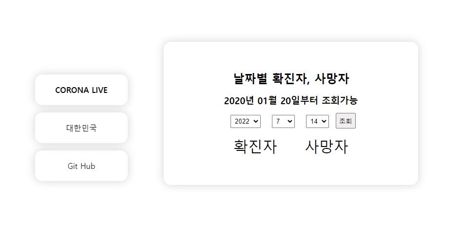

코로나라이브 라이트
코로나라이브 라이트는 코로나라이브를 모방하여 가볍게 만들어본 팀 프로젝트 입니다.
기간은 일주일, 인원은 4명으로 진행했습니다.
해당 주제는 코로나가 계속 창궐하면서 늘어나는 확진자와 사망자 데이터를 우리끼리 사용해보고 싶어서 만들어 보았습니다.
사이트에 접속하면 오늘 날짜가 자동으로 입력되어 있고 조회버튼을 클릭하여 확진자와 사망자를 확인할 수 있으며, 날짜를 변경해서 해당 날짜에 데이터를 확인할 수도 있습니다.
공공데이터 포털에서 받아온 xml 파일로 데이터를 받아왔는데
깃허브에서 소스를 확인하실 수 있습니다.
코로나 데이터를 쓰고 싶은데 어디서 사용하는지 몰라서 헤매다가 공공데이터포털이란 곳을 찾기까지 시간이 많이 소요돼서 사이트를 이쁘게 꾸미지 못 한 게 아쉬운 점입니다.
그래도 그 덕에 오픈API를 처음 사용해봤고 나중에 건강하슈 프로젝트에서도 데이터를 수월하게 가져다 쓸 수 있게된 계기가 되었습니다.
Technologies:
- - VSCode
- - Git
- - JavaScript